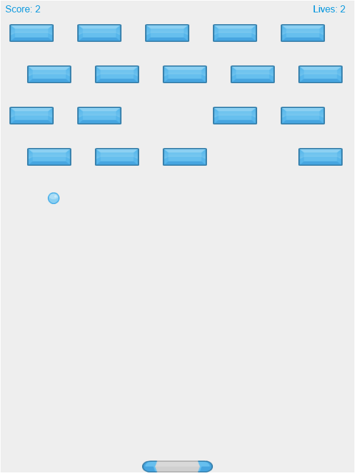

Yevgeniy Pinskiy
Brooklyn, New York, USA
About Me
My primary languages and skills include Javascript, HTML, CSS, Node.js/Express, and MongoDB. I also have experience in C#, C++, SQLite, and Xamarin.Android (Pre-Xamarin Forms). I like spending time to have creative discussions on what the best solution is and I like to use research to back up my points instead of just going off my opinion. I am a quick learner and enjoy trying on new techniques, frameworks, or libraries. My hobbies include working with various embedded tech such as Raspberry Pis, Arduinos, Feathers, and Trinkets. My IDE of choice is Atom.
GBF Raiders

One of my main projects these days is a website called GBF Raiders. It is a tool designed for players of the game Grand Blue Fantasy, a cross-platform game popular in both Japan and America. This site allows players to subscribe to and find "Raids" (player-made rooms that other players can join if they meet certain requirements). The back-end is comprised of an Express server, Socket.io, and the Twitter streaming API. The front end is styled primarily with Semantic UI and is mostly standard Javascript besides the few jQuery calls that Semantic UI components require. The Twitter stream filters out all the raids that are defined in a JSON file and emits them to Socket.io rooms. Players can then subscribe or unsubscribe from those rooms to control which show up in the site. Selected raids are saved in localstorage to survive refreshes. If the server or socket goes down, the site automatically re-subscribes to those rooms on reconnect. I have several hundred users a day and pay for the DigitalOcean server with donations. The site is hosted at GBFRaiders.com and it's GitHub is public.
I have also made a companion Chrome extension for this site, available at the Chrome webstore and the code is visible on GitHub
Projects
-
Kashtan Gifts
This is a beta website that I made from scratch for a freelance client of mine. It is a shopping website similar to Etsy but specifically for her products. The backend is a Node.js server running the Express framework and HTML templating done in EJS. The mailing of order forms and such is handled by the Mailgun API and credit card handling goes through Stripe. On the front end, it is just a simple Bootstrap implementation. This is hosted for now on Heroku before being moved to its own dedicated server in the next major update in March 2018. Here is a link to the beta site. -
Temperature Sensors + Dashboard
As a part of an effort to incorporate more home automation into my house, I built a few temperature sensors using an ESP8266 Feather and a DHT22 and then placed them around the house including one outside. I then created a Node.js server that would collect the reading from these remote sensors and store them as well as get the week's forecast and a feed from our security camera. It exposed a local dashboard that I set as the homepage on a bunch of tablets around the house. I am running the server on a Raspberry Pi 3 that I made some custom case work for to increase cooling capabilites. -
Lamp Relay Switch
The next part of my home automation project was a relay that was connected to an ESP8266. It exposed a local server that responded to the "/on" and "/off" urls. I then had a Windows Batch file that would turn on the light at the same time every day (around sunset) and turn the light off at the same time as well (around 2 AM). This was eventually replaced with a motion sensor that turns the light to full power when movement is sensed and dims the light when nobody is near. -
IoT Sprinkler System
The third step in the home automation project was designed when the family was about to go on vacation and we did not have anyone to water our garden. Thus, a timed sprinkler system was made. At the same time every day, a batch file would turn on the sprinkler for 5 minutes and then shut it off. A failsafe was built in to the sprinkler that would turn off the sprinkler after 10 mins of use if the shut off was not recieved by then. A local server was exposed that would allow us to see the last time the sprinkler was active. -

Classic Breakout Game Done in Canvas
While I was learning Javascript, I created a series of games implemented in the HTML Canvas element. This game was created from a Mozilla Developer Network tutorial that I finished and then decided to expand with new assets and sounds. Here is a link to a demo of the game and a link to the Github source for it. -
Match-3 Puzzle Game Done in Canvas
The next Canvas game I worked on was a match 3 puzzle game that I was inspired to make after my mother and sister got onto the Candy Crush fad. I created a few utility classes for this like the Grid class that I still use for the games I am working on now. Here is a link to a demo of the game and a link to the Github source for it. -
Turret Defense Game Done in Canvas
This was the first big/full game that I tried to make, as well as the one that took the longest to make. I learned quite a few techniques on this project such as pathfinding and making sprites rotate to face points. Here is a link to a demo of the game and a link to the Github source for it.
Work Experience
CURRENTLY ENROLLED AT KINGSBOROUGH COMUNITY COLLEGE
I am currently enrolled at KBCC to pursue a degree in Computer Science.JUNIOR DEVELOPER | AFS TECHNOLOGIES | 2014 - 2016
My main duties as a junior developer was to maintain and add features to a DSD ("Direct Store Delivery") mobile app for bakery drivers that was on iOS, Android, and Windows Mobile 5. The shared codebase was accomplished using Xamarin.Android and Xamarin.iOS. The coding language was primarily C#. Maintince work was just simple bugs that customer would report to us and then assigned to developers to fix. Features that were added could be as simple as a new SQLite db field or a new screen in the application to show some specific data that that customer wanted to see but could be as complicated as the fingerprint functionality that I added which involved finding a proper library and intergrating it. Other features I added was a face login feature using facial recognition/a db of approved drivers' faces and a panic button feature in event of a robbery. The tools I used for all of my work here was Visual Studio 11 as the IDE, SourceGear Vault as the source control, and Autotask as the ticketing/time management system.
INTERN | AFS TECHNOLOGIES | 2013
One of the projects that I worked on as an intern was a website that would recieve gps data from trucks and display the location and truck stock on a map, to be intergrated with another dashboard. The server was written in C# using ASP.NET and the frontend was made with Angular 1 (we were experimenting with it to see if we would use it company-wide) as well as the Google Maps API for the map part. We used MongoDB as the database. Another experimental project I worked on for AFS was a app for the Google Glass that would connect to a database and retrieve information about about a product whose barcode was scanned by the Glass after a hotword was said ("Glass, scan product."). This was written in C# using the Google Glass Development Kit and Xamarin.Android.